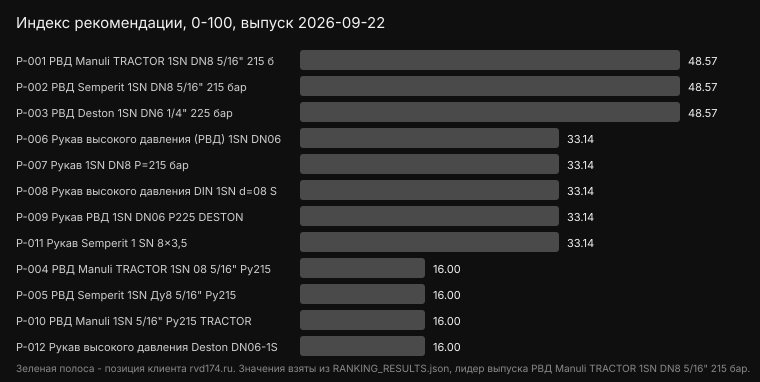
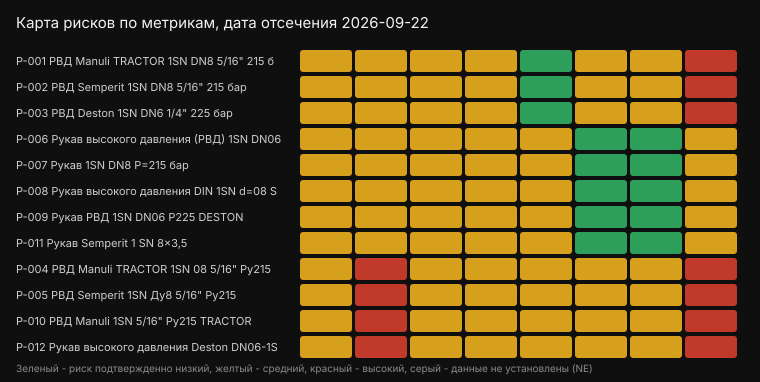

Сравнение 12 товаров по 8 метрикам. Основной показатель - confirmed weighted points, неподтвержденные строки не приравниваются к нулю.
Поставщики позиций в данной выборке: ООО «Завод Гидрокомплект», store.rvdural.ru, Автомастер, ООО «НЗ-ПАРТС», ООО «ЛАМБРИЗ», Промышленные материалы, Ломакс, Анкас, gidromsh.ru. Регион: Москва.
| Товар | Балл | Покрытие | Поставщик |
|---|---|---|---|
| РВД Manuli TRACTOR 1SN DN8 5/16" 215 бар | 47.71 | 100% | ООО «Завод Гидрокомплект» |
| РВД Semperit 1SN DN8 5/16" 215 бар | 47.71 | 100% | ООО «Завод Гидрокомплект» |
| РВД Deston 1SN DN6 1/4" 225 бар | 47.71 | 100% | ООО «Завод Гидрокомплект» |
| Рукав высокого давления (РВД) 1SN DN06-DESTON | 42.40 | 100% | Автомастер |
| Рукав 1SN DN8 P=215 бар | 42.40 | 100% | ООО «НЗ-ПАРТС» |
| Рукав высокого давления DIN 1SN d=08 Semperit | 42.40 | 100% | ООО «ЛАМБРИЗ» |
| Рукав РВД 1SN DN06 P225 DESTON | 42.40 | 100% | Промышленные материалы |
| Рукав Semperit 1 SN 8×3,5 | 42.40 | 100% | Анкас |
| РВД Manuli TRACTOR 1SN 08 5/16" Ру215 | 28.80 | 100% | store.rvdural.ru |
| РВД Semperit 1SN Ду8 5/16" Ру215 | 28.80 | 100% | store.rvdural.ru |
| РВД Manuli 1SN 5/16" Ру215 TRACTOR | 28.80 | 100% | Ломакс |
| Рукав высокого давления Deston DN06-1SN | 28.80 | 100% | gidromsh.ru |


{kind=link}
{kind=link}